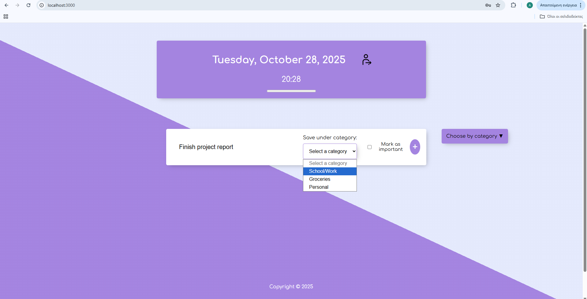
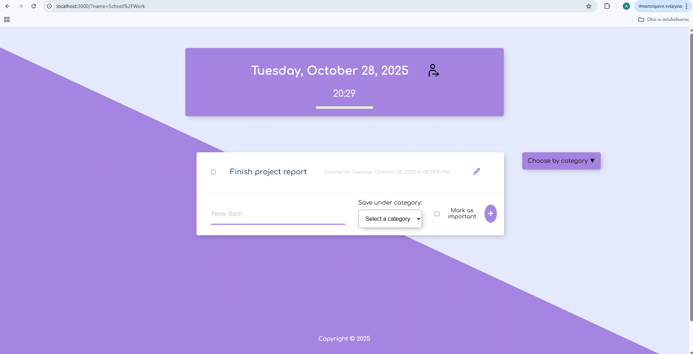

This project began as a basic to-do list web application developed during a seminar. The original version included foundational functionality such as:
cd permalistnpm installnpm startindex.js.
Run the following SQL in your PostgreSQL database (e.g., via pgAdmin):
CREATE TABLE items (
id SERIAL PRIMARY KEY,
title VARCHAR(100) NOT NULL,
created_at TIMESTAMP DEFAULT CURRENT_TIMESTAMP,
importance VARCHAR(20) DEFAULT 'Medium',
user_id INTEGER NOT NULL,
CONSTRAINT fk_user FOREIGN KEY (user_id) REFERENCES users(id),
category VARCHAR(100)
);
CREATE TABLE users (
id SERIAL PRIMARY KEY,
username VARCHAR(255) NOT NULL UNIQUE,
password VARCHAR(255)
);
CREATE TABLE deleted_items (
user_id INTEGER PRIMARY KEY REFERENCES users(id),
deleted_count INTEGER DEFAULT 0
);
This demo showcases the main features of the Permalist App, including browsing books, viewing detailed opinions and quotes, and filtering by categories.
(The login page)
(The sign up page)
(This is a display of the main page before anything is added)
(This is an example of adding something new to the list)
(Then I choose the category that I want to add the item and then I press the plus button)
(And this will be the end result)
(This is a display of how the edit button works)
(This pop up is used when the list is empty which means all tasks are complete)